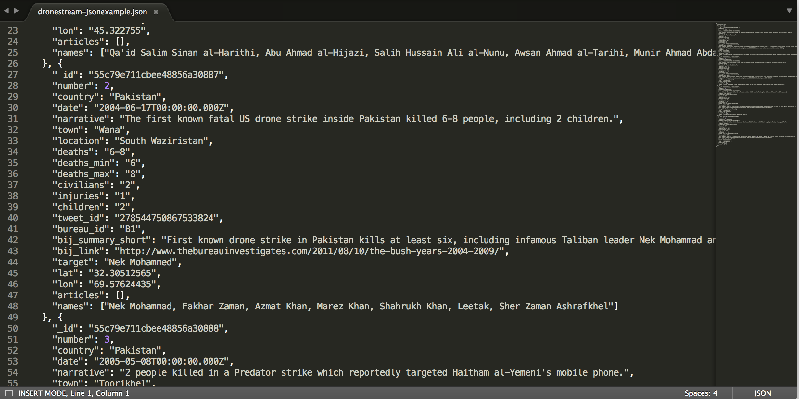

we read a simple indexed list horizontally. but the indexed list also hints at another way of reading: vertically, by column.
the spreadsheet is a complex type of indexed list, where columns are explicitly named and used to connect more than one piece of information to a single index. this way of organizing information is also really old. here's a spreadsheet from 1662 that was handwritten WITH. A. QUILL.
with digital spreadsheets, each cell has its own address. the addressing system lets us do things like quickly applying one math equation to an entire row or column. we can easily use the relationships between cells to do calculations that result in new information.
exercise: make a simple data set
think of some information you could put in the format of "index" followed by "item". here's an example:
Sunday —
3 miles
Monday —
2 miles
Tuesday —
7 miles
or
Day
# Miles Walked
Sunday
3
Monday
2
Tuesday
7
add another item, or characteristic, that relates to your index.
Day
# Miles Walked
# Words Tweeted by Trump
Sunday
3
27
Monday
2
32
Tuesday
7
200
think of some math you could do with your existing data set to create more information. can you add an index called "total" where you add up some of your items? can you divide any of values in the columns by each other to get an item per item calculation?
try filtering your information by column. or sorting alphabetically.
congratulations! you made a data set.
but you also accidentally learned a fundamental thing about how computers represent, access, and manipulate information; you learned about a data structure.
in the programming context, what we've been calling indexes and items are called "key-value pairs" or "name/value pairs". the thing that makes a spreadsheet powerful—the way you can use an index to apply one calculation to many cells—is similar to the key-value data structure that makes many programming languages powerful. next, we'll talk about how name/value pairs are represented in a popular data format called JSON.
data storage formats
many programming languages let programmers store data in data structures similar to the one we made in the spreadsheet.
a simple Python program might store a bunch of key-value pairs in a data structure, which the programmer could access and apply some calculation to.
a simple Javascript program might store a bunch of key-value pairs in a data structure, which the programmer could access and apply some interaction to.
you get the picture.
JSON is a way of storing data outside of a computer program, so that it can be fed into a program later. it's analogous to a comma-separated value (CSV) file in that it's a way to store data, but it's different because JSON data is structured as name/value pairs whereas CSV data isn't really structured at all—it's just everything between the commas.

Source: http://api.dronestre.am/datathis is a data set of covert drone strikes by the u.s. government from josh begley's dronestream project, which we'll talk about soon. if you look, you can see key-value pairs similar to ones we made earlier and as described in the JSON specification above: each name is followed by a colon, key-value pairs are separated with a comma, and each collection of key-value pairs is wrapped in these { } curly brackets
Source: http://api.dronestre.am/data
exercise: imagine a data set and/or sketch an interface
now you know how the data sausage is made, as it were. how would you make yours? what would you do with it? as mimi onuoha has been explaining for years, many data sets don't exist yet.
many data sets do exist, but don't have an interface on top of them that makes them accessible to larger audiences. many data sets exist that maybe shouldn't exist. to close, take a few minutes to address one of these prompts with the person next to you: